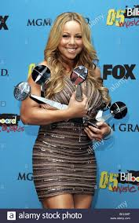

MARIAH CAREY
Mariah Carey is an American singer-songwriter and actress. Known for her five-octave vocal range, melismatic singing style, and signature use of the whistle register, she is referred to as the "Songbird Supreme" by Guinness World Records.
Born: 27 March 1970 (age 50 years), Huntington, New York, United States
Spouse: Nick Cannon (m. 2008–2016), Tommy Mottola (m. 1993–1998)
ALBUMS:
"Vision of Love"Rhett LawrenceNarada Michael Walden,
"There's Got to Be a Way" Mariah CareyRic Wake WaldenWake,
"I Don't Wanna Cry" ,
"Someday",
"Vanishing" , "All in Your Mind"
"Alone in Love" ,
"You Need Me",
"Sent from Up Above",
"Prisoner",
"Love Takes Time"

AWARDS:
Billboard Music Award for Top Female Artist
1994, 1991
Grammy Award for Best New Artist
1991
Grammy Award for Best Song
2006
· We Belong Together
Grammy Award for Best Female Pop Vocal Performance
1991 ·
Vision of Love
Billboard Music Award for Top Artist
1991
Grammy Award for Best Female R&B Vocal Performance
2006 ·
We Belong Together
NAACP Image Award for Outstanding Duo or Group
1999 ·
When You Believe
Billboard Icon Award
2019
Grammy Award for Best Contemporary R&B Album
2006 ·
The Emancipation of Mimi
American Music Award for Favorite Female Artist Pop/Rock
1996, 1995, 1993
Billboard Music Award for Top Hot 100 Song
2005 ·
We Belong Together
World Music Award - Chopard Diamond Award
2003
Billboard Music Award for Artist of the Decade
Echo Award for Best International Rock/Pop Female Artist
1995
Teen Choice Award for Choice Music: Love Song
2005 ·
We Belong Together
Soul Train Music Award for Best /Soul Single – Female
2006, 1991
We Belong Together, Vision of Love
Soul Train Music Award for Best /Soul Album – Female
2006, 1992, 1991
The Emancipation of Mimi, Emotions, Mariah Carey
GLAAD Media Ally Award
2016
ALMA Award for Outstanding Music Video Performers
2000 ·
Heartbreaker
World Music Award for World’s Best Female Artist
2005, 1996